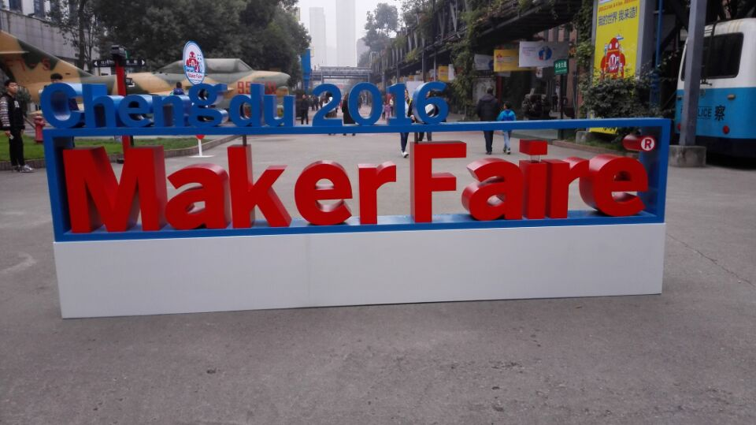
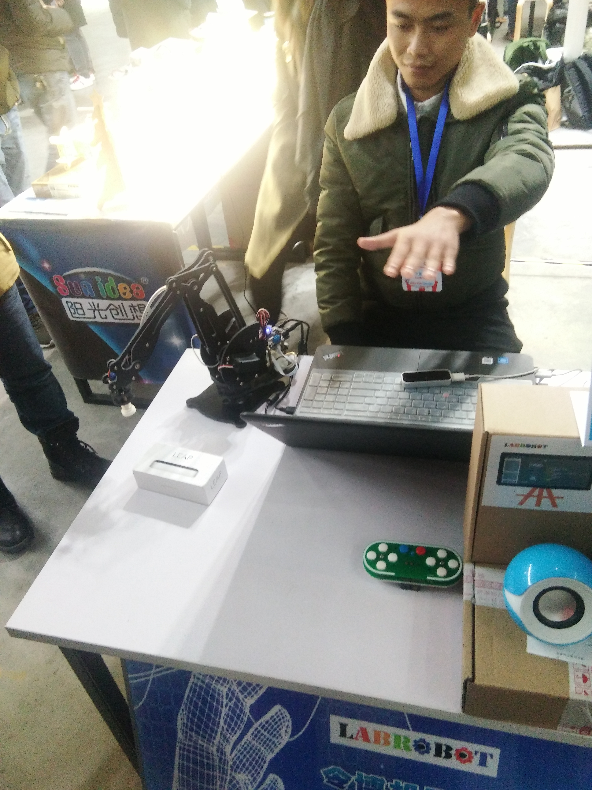
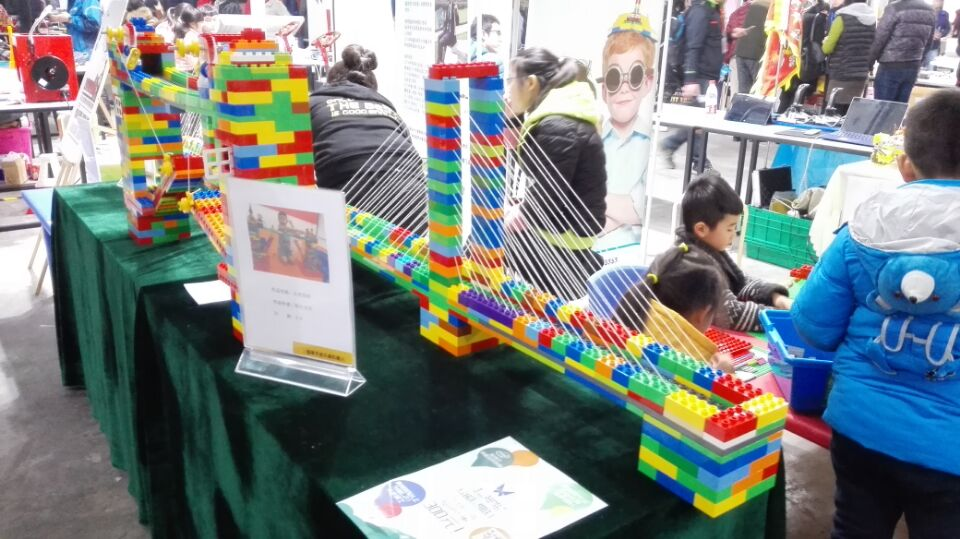
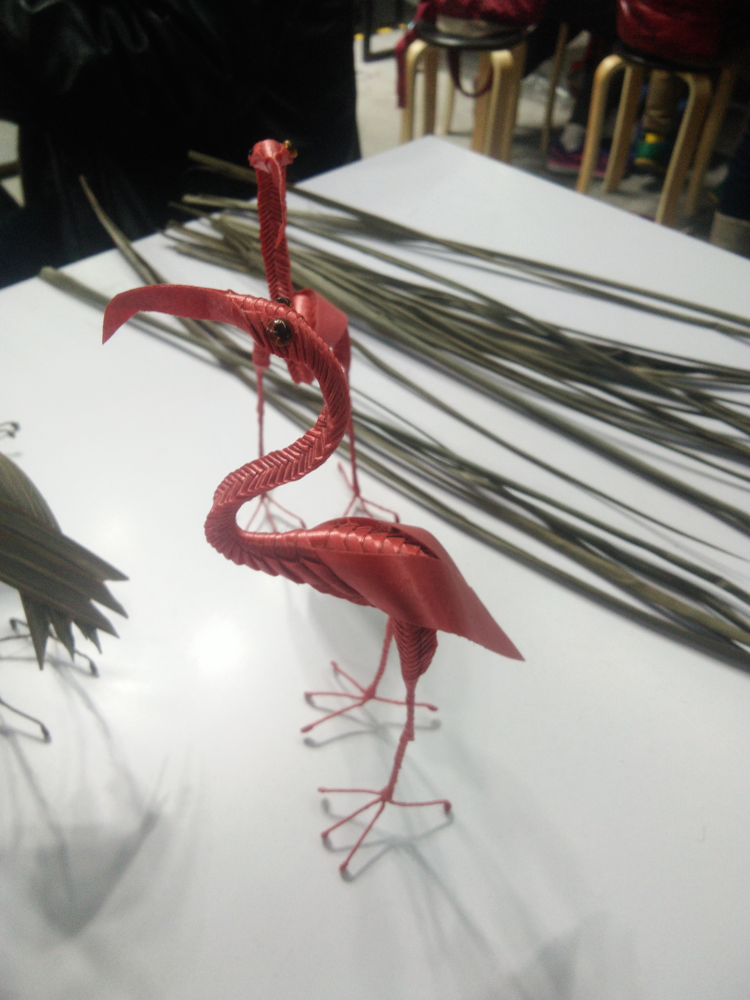
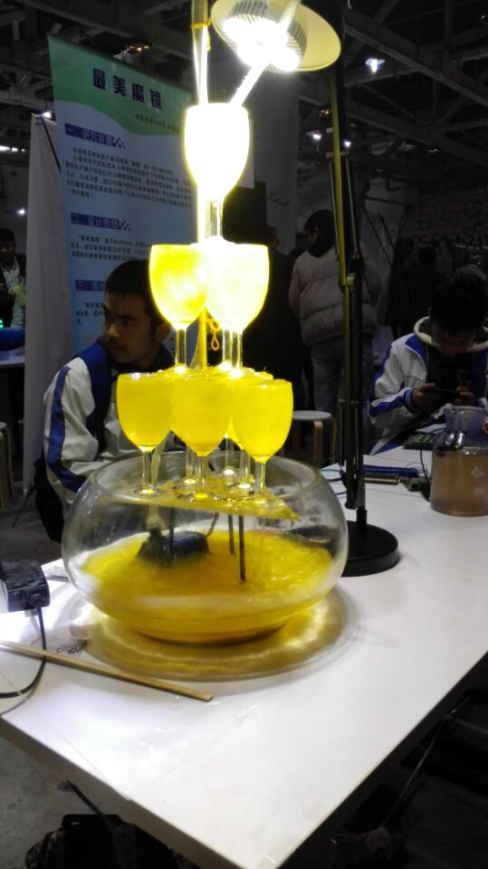
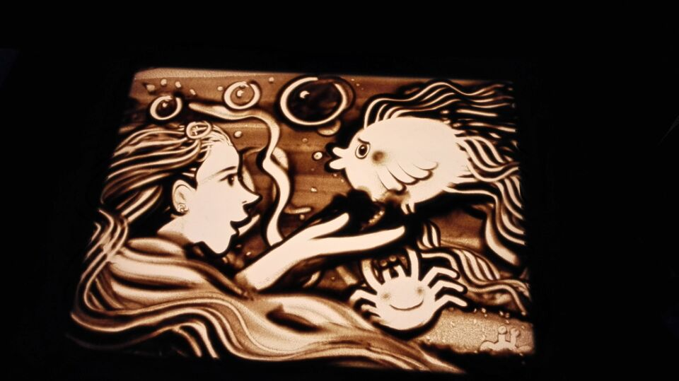
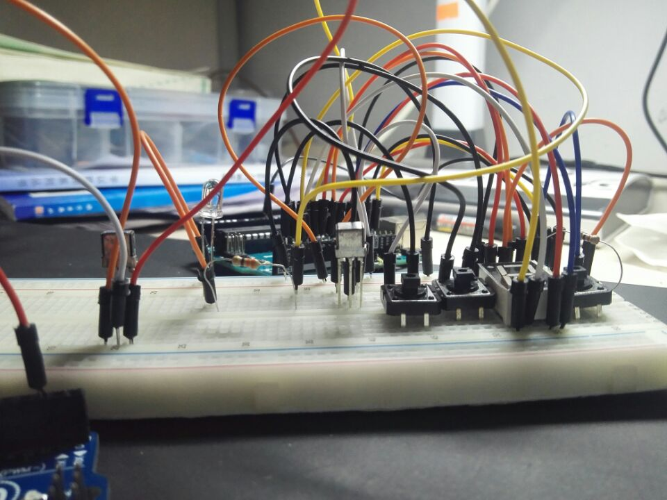
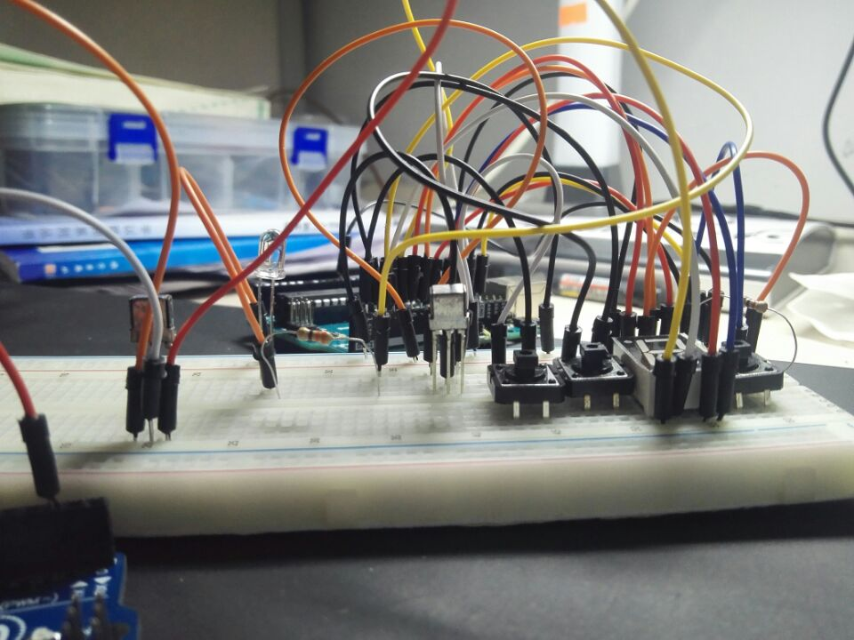

The-geeks-4
Welcome to group 2's world
GEEK:STAY HUNGRY,STAY FOOLISH.
建立在能力基础上的好奇心与改变力， 使极客精神贯穿整个互联网史， 使极客们成为世界的改变者与领导者。 从艾伦图灵，乔布斯到谢尔盖布林，拉里佩奇， 他们或桀骜不驯或谦卑内敛， 他们从不同的角度看待万物， 他们既不墨守成规也不安于现状， 他们坚信自己拥有改变世界的力量。
创客团队
- 蒋映洲
- 孙文俊
- 王渝淇
- 杨 逸
CLASS ONE
使用github软件制作网站
CLASS TWO
使用Fushion360 使用3D打印机

CLASS THREE
使用激光切割机
MAKERFAIR
     OUR PROJECT
红外收发装置
原理：使用一个38kHz红外接收头接收红外信号，并通过单片机进行解码。 按下存储按钮可以把这个信号的信息存储在数码管显示的位置 （0到9共10个位置，使用EEPROM存储）。按下发射按钮可以将数码 管显示位置的信号通过红外发射管发射出去。
 
